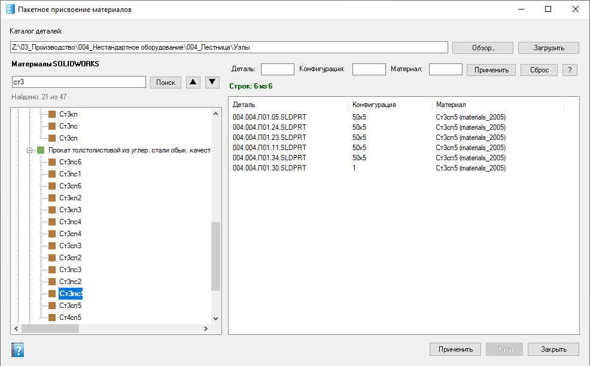

Пакетное присвоение материалов
Загрузка деталей из каталога на диске, выбор материала из базы SOLIDWORKS и применение к выделенным конфигурациям. Агент не требуется. Доступно только администратору проекта.
Как открыть
Лента Velum → Материалы пакет (уровень admin). Если рядом с активной сборкой есть папка вроде «Детали», форма может подставить её как стартовый каталог.
Области окна
- Каталог деталей — путь и «Обзор…»; кнопка Загрузить сканирует файлы деталей и конфигурации.
- Материалы SOLIDWORKS — дерево базы материалов; поиск с переходами ▲▼.
- Список — Деталь / Конфигурация / текущий Материал; фильтры над столбцами; в меню списка — Фильтр по выделенному / Исключить выделенное (см. маски).
- Применить — записать выбранный материал в выделенные строки; Стоп — прервать; прогресс внизу.
Порядок работы
- Укажите каталог деталей → Загрузить.
- В дереве материалов найдите нужный материал.
- При необходимости отфильтруйте список (маски — как в других формах).
- Выделите строки (можно «выделить все» через контекст/стандартные приёмы списка) → Применить.
- Дождитесь окончания или нажмите Стоп, если нужно прервать.

После Загрузить: в списке конфигурации деталей, в дереве выбран материал (поиск по базе), снизу — Применить / Стоп / Закрыть.
Если список пуст — проверьте каталог и нажмите «Загрузить». Материал применяется к конфигурациям деталей; сборки в этом окне не назначаются.
Операция меняет документы на диске. Перед массовым применением имеет смысл убедиться, что файлы не открыты другими пользователями и есть резервная копия при необходимости.
См. также
- Обновление свойств документов
- Реестр изделия (смена материала по позициям сборки)
- Фильтры списков